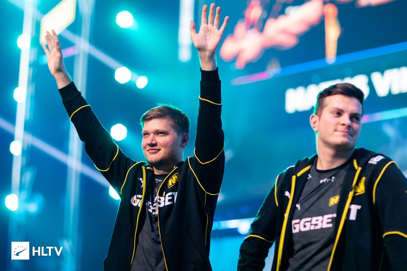

Ir para principais noticias de valorant
Ir para principais noticias de League Of legends
Ir para principais noticias de campeonato
Principais noticias de Counter Strike

S1mple diz que estava constantemente ciente dos Majors anteriores e como é fácil perdê-los.
"Parecia que mais merecíamos. Todo mundo dizia que era o Major do NAVI,
mas quando você joga, está sempre pronto para que o time inimigo possa causar
grandes estragos e você possa perder facilmente -
porque é apenas um jogo. E você não quero estragar este jogo porque não sabe quando vai surgir a próxima oportunidade. "
As principais noticias dos jogos no brasil e no mundo são aqui!!